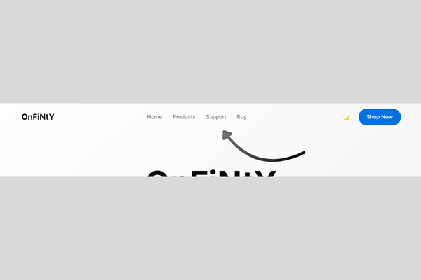

OnFiNtY Premium Product Page
A premium and minimalist landing page for a high-tech product, inspired by modern tech aesthetics and featuring a polished dark/light theme.
Project Overview
Minimalist & Premium UI
A clean, Apple-inspired design that uses ample white space, the 'Inter' typeface, and a refined color palette to create a sophisticated and high-end feel.
Dual Theme Experience
Features a seamless dark/light theme switcher that remembers the user's preference, providing a comfortable viewing experience in any lighting.
Smooth Scroll Animations
Utilizes the Intersection Observer API to trigger elegant fade-in-up animations as the user scrolls, creating a smooth and engaging browsing journey.
Key Features

"Elegant Glassmorphism Navigation"
The navigation bar uses a semi-transparent blur effect ('glassmorphism'). It becomes opaque as you scroll down for improved readability.
.png)
"Minimalist Feature Highlights"
Product features are showcased in clean, alternating grid layouts that pair concise text with large, impactful imagery to guide the user's focus.
.png)
"Animated Features Grid"
The main features are presented in a grid of cards that animate into view as you scroll, with a subtle 'lift' effect on hover to encourage interaction.
.png)
"Smart Theme Persistence"
The theme toggle saves the user's choice in their browser's `localStorage`, so their preferred theme will be automatically loaded on their next visit.
Technical Implementation
Robust Theme Switching (JS)
JavaScript manages the theme toggle by changing a `data-theme` attribute and saves the user's choice to `localStorage` for a persistent experience.
Performance-Optimized Animations
The Intersection Observer API is used to efficiently trigger animations, avoiding the performance cost of traditional scroll event listeners.
Modern CSS for Premium Feel
The design relies on modern CSS like Custom Properties for theming, `backdrop-filter` for the glass effect, and CSS Grid for responsive layouts.
Fluid Typography with `clamp()`
The hero headline uses the CSS `clamp()` function, which allows the font size to scale fluidly with the viewport for a perfect look on any screen.
Clean, Modular JavaScript
The JavaScript is well-structured, with separate functions for each piece of functionality, making it easy to read and maintain.
Accessibility-Minded Design
The use of semantic HTML, clear visual hierarchy, and sufficient contrast provides a solid foundation for an accessible user experience.
Design & Development Details
Color Scheme: A clean and versatile dual-theme palette. Light theme uses whites/grays, dark theme uses blacks/dark grays, both with a strong blue accent.
Layout: A spacious and minimalist layout system built with CSS Grid and a consistent container, inspired by top tech brands.
Animations: A suite of subtle and professional animations, including a page-load fade, scroll-triggered fade-ins, and clean hover effects.
Skills Demonstrated: UI/UX Design (Minimalism), Modern CSS (Variables, Grid, `backdrop-filter`), JS (`localStorage`, Intersection Observer).
Time taken to build: A project focused on this level of polish and refinement would take around 20-28 hours.
Pricing: For a high-quality, premium landing page like this, my personal pricing would be in the $450 - $750 range.